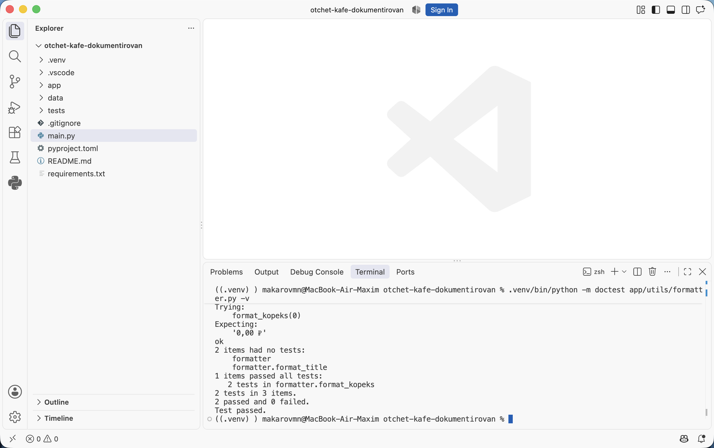
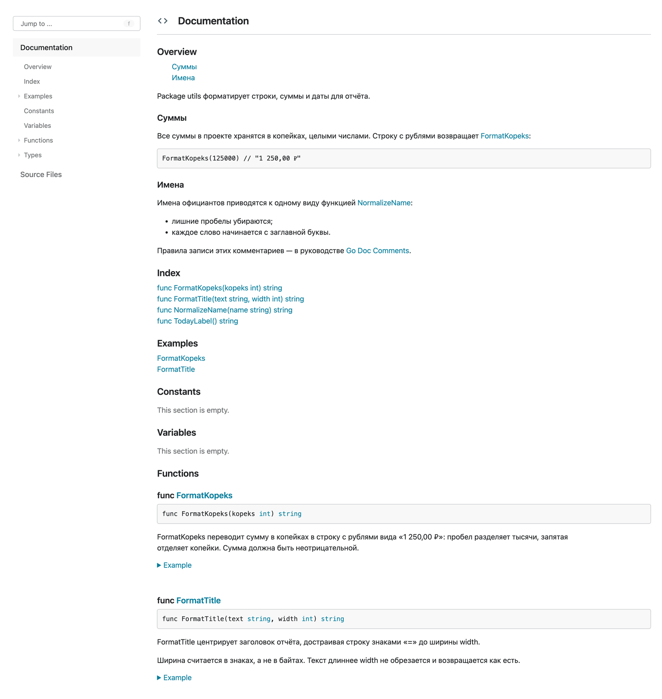

Аннотации типов и документация кода · МДК.01.01 · разработка программных модулей
Глава 4.8
Четыре формата
на одной функции
В этой главе одна и та же функция записана четырьмя способами: по PEP 257, в reStructuredText, в стиле Google и в стиле NumPy. Разобрано, чем форматы различаются, какие разделы в них есть, какие из них разбирает сборщик документации и почему в проекте выбирают один формат на всех.
- Категория
- Форматы записи
- Уровень
- Начальный
- Опирается на
- Главы 4.6 и 4.7
- Зачем это знать
- Читать чужие докстринги и писать в формате проекта
§1Зачем нужны форматы
PEP 257 задаёт общие правила записи: тройные кавычки, краткая первая строка, пустая строка после неё. Как перечислять параметры и что писать про возвращаемое значение, он не определяет. Из-за этого сложились несколько соглашений с готовой разметкой разделов; их называют форматами докстрингов.
Формат нужен по двум причинам. Первая: читателю не приходится каждый раз разбираться в устройстве текста — раздел с параметрами стоит там же, где в остальных функциях проекта. Вторая: сборщик документации по этой разметке строит таблицы параметров на странице. Текст в свободной форме он покажет как абзац.
Четыре формата встречаются постоянно, и различаются они только записью разделов:
| Формат | Откуда взялся | Как выглядит параметр |
|---|---|---|
| PEP 257 | Стандарт Python, разделов не задаёт | Обычным текстом в абзаце |
| reStructuredText (reST) | Разметка документации Python и Sphinx | :param path: описание |
| Соглашение проектов Google | Раздел Args:, внутри path: описание | |
| NumPy | Библиотеки NumPy и SciPy | Раздел Parameters с чертой, внутри path : Path |
§2Функция для сравнения
Все четыре записи сделаны для одной функции из проекта кафе. Она берёт список заказов, считает выручку по каждому официанту и возвращает словарь. Пустой список для неё недопустим.
def revenue_by_waiter(orders: list[Order], top: int = 0) -> dict[str, int]: if not orders: raise ValueError("Список заказов пуст") totals: dict[str, int] = {} for order in orders: totals[order.waiter] = totals.get(order.waiter, 0) + order.kopeks ranked = sorted(totals.items(), key=lambda pair: -pair[1]) if top: ranked = ranked[:top] return dict(ranked)
Из подписи видно, что на входе список заказов и целое число, на выходе словарь со строковыми ключами. Четырёх вещей в подписи нет: значения словаря — копейки; ключи идут в порядке убывания выручки; top со значением 0 означает «все официанты»; пустой список приводит к ValueError. Эти четыре вещи и записывают в докстринг.
§3Формат 1. PEP 257 без разделов
Запись без разделов: краткая строка, пустая строка и абзац подробностей. Требованиям стандарта это отвечает.
"""Считает выручку по каждому официанту.
Суммы возвращаются в копейках, официанты идут в порядке убывания
выручки. Значение top = 0 означает, что возвращаются все официанты,
иначе остаются только первые top. Пустой список заказов приводит
к ValueError.
"""
| Сильная сторона | Ограничение |
|---|---|
| Пишется быстро, читается как обычный текст | Параметры перечислены в абзаце: при четырёх аргументах текст становится сплошным |
| Никаких дополнительных правил запоминать не нужно | Сборщик документации не построит таблицу параметров, покажет абзац |
Такая запись применяется для коротких функций и служебных модулей. Для функции с несколькими параметрами и исключениями берут формат с разделами.
§4Формат 2. reStructuredText
reStructuredText — язык разметки, на котором написана документация самого Python. В докстринге от него используются поля: строка начинается с двоеточия, затем имя поля, затем двоеточие и текст.
"""Считает выручку по каждому официанту.
:param orders: Заказы за смену, список не должен быть пустым.
:type orders: list[Order]
:param top: Сколько официантов оставить; 0 — оставить всех.
:type top: int
:return: Выручка в копейках по официантам, по убыванию суммы.
:rtype: dict[str, int]
:raises ValueError: Если список заказов пуст.
"""
Поля :type: и :rtype: нужны, когда у функции нет аннотаций типов. При аннотированной подписи их опускают: иначе один и тот же тип записан в двух местах и после правки расходится.
| Сильная сторона | Ограничение |
|---|---|
| Разбирается сборщиком без дополнительных настроек | Каждая строка начинается со служебных символов, читать в редакторе тяжелее |
| Внутри полей доступна вся разметка reStructuredText: ссылки, списки, вставки кода | Разметку нужно знать: у неё свои правила про отступы и переносы |
§5Формат 3. Google
Формат Google размечает разделы обычными словами с двоеточием, а содержимое — отступом. Служебных символов в тексте нет.
"""Считает выручку по каждому официанту.
Args:
orders: Заказы за смену, список не должен быть пустым.
top: Сколько официантов оставить в результате. Значение 0
означает, что возвращаются все.
Returns:
Выручка в копейках по именам официантов, в порядке убывания
суммы.
Raises:
ValueError: Если список заказов пуст.
"""
Длинное описание параметра переносится на следующую строку с дополнительным отступом — так видно, что это продолжение того же пункта.
| Сильная сторона | Ограничение |
|---|---|
| Читается в редакторе как обычный текст, разделы видны сразу | Сборщику документации нужно расширение, которое эту разметку разбирает |
| Занимает меньше строк, чем NumPy, при том же составе разделов | Отступы значимы: сбитый отступ превращает раздел в абзац |
Разделы Args: и Parameters сборщик Sphinx разбирает через расширение sphinx.ext.napoleon: оно переводит форматы Google и NumPy в поля reStructuredText перед сборкой. Подключается строкой в настройках сборки, и это единственное, что требуется для этих двух форматов. Подробно — в теме про Sphinx.
§6Формат 4. NumPy
Формат NumPy размечает разделы заголовком с чертой из дефисов под ним. Имя параметра и его тип пишутся через двоеточие, описание — на следующей строке с отступом.
"""Считает выручку по каждому официанту.
Parameters
----------
orders : list[Order]
Заказы за смену, список не должен быть пустым.
top : int, optional
Сколько официантов оставить в результате, по умолчанию 0 —
возвращаются все.
Returns
-------
dict[str, int]
Выручка в копейках по именам официантов, по убыванию суммы.
Raises
------
ValueError
Если список заказов пуст.
"""
| Сильная сторона | Ограничение |
|---|---|
| Подробно: тип, признак необязательности и описание разнесены | Занимает много строк, у короткой функции описание длиннее тела |
| Принят в научных библиотеках, привычен их пользователям | Черта под заголовком должна совпадать по длине со словом, это легко нарушить |
§7Сравнение четырёх форматов
| Признак | PEP 257 | reST | NumPy | |
|---|---|---|---|---|
| Разделы для параметров | нет | :param: | Args: | Parameters + черта |
| Строк на разобранную функцию | 7 | 10 | 12 | 18 |
| Служебные символы в тексте | нет | много | нет | нет |
| Нужно расширение для сборки | нет | нет | napoleon | napoleon |
| Таблица параметров на странице | нет | да | да | да |
| Где встречается чаще | короткие служебные функции | старые проекты и документация Python | прикладные проекты и веб-сервисы | NumPy, SciPy, pandas |
Четыре записи одного докстринга сравниваются на месте переключением вкладок:
Одна функция, четыре записипереключите формат
"""Считает выручку по каждому официанту.
Суммы возвращаются в копейках, официанты идут в порядке убывания
выручки. Значение top = 0 означает, что возвращаются все официанты.
Пустой список заказов приводит к ValueError.
"""
СборщикРазметки нет, поэтому на странице документации весь текст окажется одним абзацем: таблицу параметров построить не из чего.
"""Считает выручку по каждому официанту.
:param orders: Заказы за смену, список не должен быть пустым.
:param top: Сколько официантов оставить; 0 — оставить всех.
:return: Выручка в копейках по официантам, по убыванию суммы.
:raises ValueError: Если список заказов пуст.
"""
СборщикПоля разбираются без дополнительных настроек, параметры попадут в таблицу. В редакторе такой текст читается тяжелее: каждая строка начинается со служебных символов.
"""Считает выручку по каждому официанту.
Args:
orders: Заказы за смену, список не должен быть пустым.
top: Сколько официантов оставить в результате. Значение 0
означает, что возвращаются все.
Returns:
Выручка в копейках по именам официантов, по убыванию суммы.
Raises:
ValueError: Если список заказов пуст.
"""
СборщикРазделы разбираются расширением napoleon и превращаются в ту же таблицу параметров. В редакторе текст читается как обычные абзацы с заголовками.
"""Считает выручку по каждому официанту.
Parameters
----------
orders : list[Order]
Заказы за смену, список не должен быть пустым.
top : int, optional
Сколько официантов оставить, по умолчанию 0 — все.
Returns
-------
dict[str, int]
Выручка в копейках по именам официантов, по убыванию суммы.
Raises
------
ValueError
Если список заказов пуст.
"""
СборщикРазбирается тем же расширением napoleon. Тип повторяется рядом с именем параметра, поэтому запись длиннее остальных: у короткой функции описание выходит длиннее тела.
Формат выбирают один на весь проект и записывают это решение в README или в настройках проверки. От смешанных форматов в одном репозитории страдает чтение: читателю приходится каждый раз заново искать, где перечислены параметры.
§8Разделы и когда они нужны
Названия разделов даны в записи формата Google; в остальных форматах они называются похоже.
| Раздел | Что в нём | Когда нужен |
|---|---|---|
Args: | Параметры: ограничения, единицы измерения, смысл значений по умолчанию | Когда из имени и аннотации ограничения не видны |
Returns: | Что означает возвращаемое значение, в каком порядке, в каких единицах | Когда функция возвращает значение |
Yields: | Что выдаёт генератор на каждом шаге | Вместо Returns: в функциях с yield |
Raises: | Класс исключения и условие, при котором оно возбуждается | Когда функция возбуждает исключение сама |
Attributes: | Атрибуты объекта и их смысл | В докстринге класса |
Examples: | Вызов функции и результат | Когда порядок аргументов или формат результата неочевиден |
Note: | Побочные действия: запись файла, изменение аргумента на месте, обращение к сети | Когда функция делает что-то помимо вычисления результата |
Раздел, в котором нечего написать, пропускают. Пустой Returns: у функции, возвращающей None, занимает две строки и не сообщает ничего.
§9Примеры, которые проверяются запуском
Раздел с примерами оформляют так, как выглядит работа в интерактивном режиме Python: строка ввода начинается с трёх угловых скобок, под ней — ожидаемый вывод. У такой записи есть дополнительное свойство: встроенный модуль doctest находит эти примеры, выполняет их и сравнивает результат с тем, что написано.
def format_kopeks(kopeks: int) -> str: """Переводит сумму в копейках в строку с рублями. Examples: >>> format_kopeks(125000) '1 250,00 ₽' >>> format_kopeks(0) '0,00 ₽' """

doctest нашёл в докстринге format_kopeks два вызова, выполнил их и сравнил вывод с тем, что записано под ними. Строка 2 passed означает, что примеры совпали с поведением функции.Расхождение примера с поведением функции эта команда показывает как несовпадение строк: ожидалось одно, получено другое. Так описание перестаёт устаревать молча — устаревший пример становится падающей проверкой. Запускать doctest можно вместе с тестами: pytest --doctest-modules.
Примеры сравниваются построчно как текст. Вызов, результат которого меняется от запуска к запуску — текущее время, случайное число, путь к файлу на конкретном компьютере, — в таком виде проверить нельзя. Для примеров берут вызовы с постоянным результатом; остальное проверяют обычными тестами.
§10Формат этого курса
В проектах дисциплины принят формат Google. Основания такие:
- Разделы читаются в редакторе без разметки: студент видит тот же текст, что попадёт на страницу документации.
- Типы остаются в подписи функции, в докстринге их дублировать не требуется.
- Формат поддерживается генератором докстрингов в VS Code из главы 4.10 и проверкой из той же главы.
- Он применяется в прикладных проектах и веб-сервисах, а курс заканчивается сервисом на FastAPI.
Формат NumPy встретится при чтении документации научных библиотек, reStructuredText — в старых проектах и в исходниках стандартной библиотеки. Их достаточно узнавать и понимать.
§11Проверьте себя
Зачем нужны форматы, если PEP 257 разделов не требует?
Формат даёт одинаковое место для одинаковых сведений: читатель находит раздел о параметрах там же, где в остальных функциях проекта. Второе основание — сборщик документации: по размеченным разделам он строит таблицу параметров, а текст без разметки показывает абзацем.
В функции есть аннотации типов. Нужны ли поля :type: в формате reStructuredText?
Нет. Тип уже записан в подписи, и второе его упоминание после правки функции расходится с первым. Поля :type: и :rtype: применяют в коде без аннотаций.
Чем разделы Google отличаются от разделов NumPy по записи?
В Google раздел открывается словом с двоеточием (Args:), содержимое идёт с отступом, тип не повторяется. В NumPy раздел открывается заголовком (Parameters) с чертой из дефисов под ним, имя параметра и тип записываются в одну строку через двоеточие, описание — ниже с отступом. Запись NumPy занимает больше строк.
Что требуется для сборки документации из докстрингов в формате Google?
Расширение sphinx.ext.napoleon: оно переводит разделы Google и NumPy в поля reStructuredText перед сборкой. Формат reStructuredText сборщик разбирает без расширений.
Какой раздел ставят у функции-генератора и почему?
Yields: вместо Returns:. Генератор выдаёт значения по одному при каждом шаге перебора, и описывается то, что приходит на каждом шаге.
Чем пример в разделе Examples: отличается от обычного описания?
Он записан как строки интерактивного режима и поэтому проверяем запуском: python -m doctest выполняет вызовы и сравнивает вывод с написанным. Расхождение примера с поведением функции становится падающей проверкой.
§12Шпаргалка по главе
краткая строка + абзац
разделов нет
:param x: описание
:return: описание
:raises ValueError: когда
Args:
Returns:
Raises:
Parameters
----------
x : int
Yields: у генератора
Attributes: у класса
Examples: с >>>
python -m doctest файл.py -v
pytest --doctest-modules
Итог главы
PEP 257 задаёт общие правила записи, а разметку разделов задают форматы. Запись по PEP 257 состоит из краткой строки и абзаца и годится для коротких функций. reStructuredText размечает сведения полями с двоеточиями, и сборщик разбирает их без настроек. Формат Google размечает разделы словами Args, Returns, Raises и читается в редакторе как обычный текст. Формат NumPy подробнее остальных: заголовок раздела с чертой, тип рядом с именем параметра, описание ниже. Google и NumPy собираются в документацию через расширение napoleon. Раздел с примерами, записанный строками интерактивного режима, проверяется запуском doctest. В дисциплине принят формат Google, один на все проекты. В следующей главе он применён к двенадцати небольшим функциям разного вида.
- Общие правила записи — PEP 257, Docstring Conventions.
- Разделы форматов Google и NumPy и их поддержка при сборке — документация расширения sphinx.ext.napoleon.
- Поля reStructuredText для описания функций — документация Sphinx, списки информационных полей.
- Проверка примеров из докстрингов — документация модуля doctest.
Разметка комментария
и примеры, которые проверяются
В Python для докстрингов сложились четыре формата, в Go формат один на весь язык. В этой главе разобрана его разметка — абзацы, ссылки на имена, списки, блоки кода, заголовки, пометка об устаревании — и то, как gofmt приводит её к одному виду. Вторая половина главы — функции-примеры Example…: они показываются в документации и проверяются командой go test.
- Категория
- Формат записи
- Уровень
- Начальный
- Опирается на
- Главы 4.6 и 4.7, тесты Go из темы 02
- Зачем это знать
- Читать документацию чужих пакетов и писать свою в том же виде
§1Один формат на весь язык
В Python PEP 257 задаёт только общие правила, а разметку разделов придумали отдельные проекты: так появились форматы reStructuredText, Google и NumPy. В Go разметку комментариев определяет сам язык — руководство Go Doc Comments, — и все инструменты читают её одинаково: go doc, gopls, pkgsite и сайт pkg.go.dev. Выбирать формат для проекта не нужно.
Разметка простая. В ней нет разделов Args: и Returns:, нет полужирного шрифта и таблиц. Комментарий читается как обычный текст и в файле, и в терминале. Элементов разметки шесть:
| Элемент | Как записывается | Где разобран |
|---|---|---|
| Абзац | строки текста; абзацы разделяет строка // | §2 |
| Ссылка на имя | [FormatKopeks], [strings.Fields] | §3 |
| Ссылка на адрес | [текст] в абзаце и строка [текст]: https://… внизу | §3 |
| Список | строки с отступом и знаком - или номером | §4 |
| Блок кода | строки с отступом, без знака списка | §4 |
| Заголовок | строка # Заголовок между пустыми строками | §4 |
Отдельно стоит абзац, начинающийся словом Deprecated:, — пометка об устаревшем имени (§5). Все примеры главы взяты из третьего архива: там у пакета utils есть файл doc.go, в котором использованы почти все элементы.
§2Абзацы
Абзац — подряд идущие строки текста. Переносы строк внутри абзаца ничего не значат: go doc и pkgsite склеивают строки и переносят текст заново по ширине экрана. Поэтому строки в файле обрывают там, где удобно читать код. Новый абзац начинается после строки, в которой стоит только //.
// RevenueByWaiter считает выручку по каждому официанту и возвращает // её в порядке убывания суммы. // // Параметр top ограничивает число официантов в результате; // значение 0 означает «все». Для пустого списка заказов // возвращается [ErrNoOrders].
Первый абзац — что делает функция. Второй — подробности: смысл параметра top и случай ошибки. Параметры называются по имени прямо в тексте; отдельного раздела для них нет.
§3Ссылки на имена и адреса
Имя в квадратных скобках — ссылка на документацию (doc link). На сайте она становится переходом к описанию этого имени, в подсказке редактора — тоже ссылкой, в выводе go doc скобки убираются. Ссылаться можно на имя своего пакета, на имя другого пакета и на метод:
| Запись | Куда ведёт |
|---|---|
[ErrNoOrders] | имя из того же пакета |
[utils.NormalizeName] | имя из другого пакета, который импортирован в этом файле |
[strings.Fields] | имя из стандартной библиотеки |
[Shift.Add] | метод типа |
Ссылки на имена проверяются: если имени нет, скобки останутся в тексте как есть, без перехода. Поэтому ссылку на ошибку [ErrNoOrders] надёжнее простого слова: после переименования переменной неработающую ссылку видно на сайте.
Ссылка на внешний адрес записывается в два места. В тексте — слово или фраза в квадратных скобках, в конце комментария — отдельная строка с этой же фразой, двоеточием и адресом:
// Правила записи этих комментариев — в руководстве [Go Doc Comments]. // // [Go Doc Comments]: https://go.dev/doc/comment
Строку с адресом называют определением ссылки. На сайте её не видно: фраза в тексте становится ссылкой, а сама строка скрывается. Адрес, записанный в тексте без скобок, например https://go.dev, тоже становится ссылкой.
§4Списки, блоки кода, заголовки
Эти три элемента видны в комментарии пакета utils. Он вынесен в отдельный файл doc.go, в котором кроме комментария и строки package ничего нет:
// Package utils форматирует строки, суммы и даты для отчёта. // // # Суммы // // Все суммы в проекте хранятся в копейках, целыми числами. // Строку с рублями возвращает [FormatKopeks]: // // FormatKopeks(125000) // "1 250,00 ₽" // // # Имена // // Имена официантов приводятся к одному виду функцией [NormalizeName]: // - лишние пробелы убираются; // - каждое слово начинается с заглавной буквы. // // Правила записи этих комментариев — в руководстве [Go Doc Comments]. // // [Go Doc Comments]: https://go.dev/doc/comment package utils
Заголовок — строка, которая начинается с # и пробела, с пустыми строками // до и после. Здесь их два: «Суммы» и «Имена». Заголовки нужны в длинных комментариях пакета; в комментарии одной функции их не пишут.
Блок кода — строки с отступом после //. Строка // FormatKopeks(125000) // "1 250,00 ₽" начинается с табуляции, поэтому инструменты покажут её моноширинным шрифтом и не станут склеивать с соседними строками. Перед блоком нужна пустая строка //.
Список — строки с отступом, которые начинаются знаком -, *, + или номером с точкой. Знак списка без отступа списком не считается: строки // * в копейках и // * в рублях склеятся в обычный абзац «Суммы бывают: * в копейках * в рублях». Так их печатает go doc, если убрать отступ в комментарии проекта.
Так этот комментарий печатает go doc. Заголовки остались строками с #, блок кода получил отступ, абзацы перенесены заново, а скобки ссылок убраны:
$ go doc ./internal/utils
package utils // import "example.com/otchet-kafe/internal/utils"
Package utils форматирует строки, суммы и даты для отчёта.
# Суммы
Все суммы в проекте хранятся в копейках, целыми числами. Строку с рублями
возвращает FormatKopeks:
FormatKopeks(125000) // "1 250,00 ₽"
# Имена
Имена официантов приводятся к одному виду функцией NormalizeName:
- лишние пробелы убираются;
- каждое слово начинается с заглавной буквы.
Правила записи этих комментариев — в руководстве Go Doc Comments.
[Go Doc Comments]: https://go.dev/doc/comment
func FormatKopeks(kopeks int) string
func FormatTitle(text string, width int) string
func NormalizeName(name string) string
func TodayLabel() string
§5Пометка Deprecated
Если имя устарело, но удалить его сразу нельзя — его ещё вызывают в других местах, — в его комментарий добавляют абзац, который начинается словом Deprecated: и называет замену:
// FormatRubles переводит сумму в рублях в строку. // // Deprecated: суммы хранятся в копейках, используйте [FormatKopeks]. func FormatRubles(rubles float64) string {
Эту пометку читают программы. pkgsite сворачивает описание устаревшего имени, gopls зачёркивает имя в автодополнении, а staticcheck выдаёт замечание в каждом месте, где устаревшее имя ещё вызывают. Слово пишется по-английски, с заглавной буквы, с двоеточием и в начале абзаца: в другом виде программы пометку не узнают.
§6gofmt приводит разметку
Программа gofmt, которая при сохранении выравнивает код, с версии Go 1.19 приводит к одному виду и комментарии документации. Она ставит табуляцию в начале строк блока кода, добавляет пустую строку перед блоком и переносит определения ссылок в конец комментария. Ниже — что gofmt -d предлагает исправить в небрежно записанном комментарии из пробного файла markup.go; строки с минусом будут убраны, с плюсом — добавлены:
@@ -7,11 +7,12 @@ // * в рублях // // Пример вызова: -// FormatKopeks(125000) +// +// FormatKopeks(125000) // // Подробнее — в [FormatKopeks] и [strings.Fields], а также на [сайте Go]. // -// [сайте Go]: https://go.dev/doc/comment -// // Deprecated: используйте [FormatKopeks]. +// +// [сайте Go]: https://go.dev/doc/comment
Блок кода получил пустую строку перед собой и табуляцию вместо четырёх пробелов, определение ссылки переехало в самый конец. Строки // * в рублях gofmt не тронул: без отступа это не список, а текст абзаца, и что автор имел в виду список, программа не знает. Отступ у списка ставят руками.
В VS Code с расширением Go gofmt срабатывает при каждом сохранении файла, поэтому разметку блоков и ссылок вручную выравнивать не нужно.
§7Как разметка выглядит на сайте
Тот же комментарий пакета на странице, которую собирает pkgsite из главы 4.6. Запустите его в папке третьего архива и откройте пакет internal/utils:

FormatKopeks, NormalizeName и Go Doc Comments стали ссылками, а строка с адресом скрыта. В разделе Examples перечислены функции-примеры из §8, а под описаниями FormatKopeks и FormatTitle появились свёрнутые блоки Example.§8Примеры, которые проверяются запуском
В Python пример вызова записывают прямо в докстринг строками >>>, а модуль doctest его выполняет. В Go пример — отдельная функция в файле тестов. Её называют функцией-примером: имя начинается словом Example, а в конце тела стоит комментарий // Output: с ожидаемым выводом.
package utils_test import ( "fmt" "example.com/otchet-kafe/internal/utils" ) func ExampleFormatKopeks() { fmt.Println(utils.FormatKopeks(125000)) fmt.Println(utils.FormatKopeks(0)) // Output: // 1 250,00 ₽ // 0,00 ₽ } func ExampleFormatTitle() { fmt.Println(utils.FormatTitle(" Итог ", 20)) // Output: // ======= Итог ======= }
Разберём файл по частям. Имя файла оканчивается на _test.go: такие файлы не входят в собранную программу, их компилирует только go test. Пакет назван utils_test — это отдельный пакет для проверки снаружи. Функции из utils он вызывает так же, как вызывал бы любой другой пакет: с приставкой utils. и только экспортируемые. Поэтому пример показывает вызов ровно в том виде, в каком его напишет читатель документации.
Имя функции говорит, к чему относится пример. ExampleFormatKopeks — пример к функции FormatKopeks; на сайте он появится под её описанием. Варианты имён:
| Имя функции-примера | К чему относится |
|---|---|
Example | к пакету целиком |
ExampleFormatKopeks | к функции FormatKopeks |
ExampleShift | к типу Shift |
ExampleShift_Add | к методу Add типа Shift |
ExampleFormatKopeks_zero | второй пример к той же функции; часть после подчёркивания — с маленькой буквы |
Комментарий // Output: превращает пример в проверку. go test выполняет функцию, собирает всё, что она напечатала, и сравнивает со строками после // Output:. Запуск на третьем архиве:
$ go test -run Example -v ./internal/utils === RUN ExampleFormatKopeks --- PASS: ExampleFormatKopeks (0.00s) === RUN ExampleFormatTitle --- PASS: ExampleFormatTitle (0.00s) PASS ok example.com/otchet-kafe/internal/utils 1.348s
Флаг -run Example оставляет только функции, в имени которых есть слово Example, флаг -v печатает каждую. Без флагов go test ./... выполняет примеры вместе с обычными тестами. Если поведение функции разойдётся с примером, проверка упадёт. Для опыта в строке ожидаемого вывода 0,00 ₽ заменено на 0 ₽:
$ go test ./internal/utils --- FAIL: ExampleFormatKopeks (0.00s) got: 1 250,00 ₽ 0,00 ₽ want: 1 250,00 ₽ 0 ₽ FAIL FAIL example.com/otchet-kafe/internal/utils 1.387s FAIL
Под got: — что функция напечатала на самом деле, под want: — что записано в примере. Поэтому пример не может устареть незаметно: если поведение функции изменится, проверка упадёт.
Имена примеров проверяет go vet. Если имя ссылается на несуществующую функцию, например после переименования, он сообщит: ExampleTodayLabels refers to unknown identifier: TodayLabels. Пример без строки // Output: go test только компилирует и не выполняет: в документации он покажется, но его вывод никто не сверяет.
Вывод сравнивается построчно как текст. Вызов, результат которого меняется от запуска к запуску — текущая дата, случайное число, путь к файлу на конкретном компьютере, — так проверить нельзя. Поэтому у TodayLabel в проекте примера нет. Для таких функций пишут пример без // Output: или обычный тест.
§9Сравнение с форматами Python
Те, кто пишет на обоих языках, встречают одни и те же сведения в разной записи. Соответствие такое:
| Что описывается | Python, формат Google | Go |
|---|---|---|
| Краткое описание | первая строка докстринга | первое предложение, начинается с имени |
| Параметры | раздел Args: | предложения с именем параметра |
| Результат | раздел Returns: | предложение «возвращает…» |
| Ошибки | раздел Raises: | предложение «возвращается [ErrX], если…» |
| Поля класса | раздел Attributes: | комментарий в конце строки поля |
| Пример | раздел Examples: со строками >>>, проверяет doctest | функция Example… с // Output:, проверяет go test |
| Устаревшее | свободный текст или предупреждение в коде | абзац Deprecated: |
| Ссылка на другое имя | зависит от сборщика документации | [Имя] |
§10Что писать в этом курсе
В курсе для Go принят формат Go Doc Comments без отступлений — других вариантов в языке нет. Договорённости проекта касаются содержания:
Комментарий в проекте курса
// Output:.§11Проверьте себя
Как в комментарии Go сослаться на функцию Fields из пакета strings?
Записать имя в квадратных скобках с именем пакета: [strings.Fields]. На сайте и в подсказке это будет ссылка, в выводе go doc — обычное слово.
Почему строки // * в копейках и // * в рублях не стали списком?
Список в комментарии Go — строки с отступом после //. Без отступа знак * — обычный символ текста, и строки склеиваются в абзац. Правильно: // - в копейках.
Чем функция-пример с // Output: отличается от примера без него?
С // Output: пример выполняется командой go test, и его вывод сравнивается с записанным: расхождение — упавшая проверка. Без // Output: пример только компилируется и показывается в документации.
Как назвать пример к методу TotalKopeks типа Shift?
ExampleShift_TotalKopeks: имя типа, подчёркивание, имя метода.
Где в Go пишут то, что в Python идёт в разделы Args: и Raises:?
Обычными предложениями в абзацах комментария: параметр называют по имени, а ошибку — ссылкой на переменную ошибки, например «Для пустого списка возвращается [ErrNoGrades]».
§12Шпаргалка по главе
// — граница абзаца
// # Заголовок
[ErrNoOrders] [strings.Fields]
// [текст]: https://…
// - пункт
// код с табуляцией
// Deprecated: используйте [X].
func ExampleFormatKopeks()
// Output:
go test -run Example -v ./...
gofmt -d файл.go
Итог главы
Разметку комментариев в Go определяет сам язык, и формат у всех проектов один. Абзацы разделяет строка //, имя в квадратных скобках становится ссылкой, строки с отступом — списком или блоком кода, строка # … — заголовком, абзац Deprecated: помечает устаревшее имя. gofmt выравнивает блоки и ссылки при сохранении файла. Примеры вызова пишут функциями Example… в файлах _test.go: строка // Output: делает их проверкой, которую выполняет go test, а pkgsite показывает их рядом с описанием.
- Абзацы, заголовки, ссылки, списки, блоки кода, Deprecated и переформатирование в gofmt — Go Doc Comments.
- Функции-примеры, их имена и
// Output:— документация пакета testing, Examples; статья Testable Examples in Go. - Проверка имён примеров — анализатор tests в составе
go vet. - Выводы
go doc,gofmt,go testиgo vetполучены на третьем архиве с Go1.27; страница pkgsite снята с того же архива.